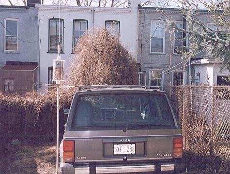

This shows the overall mounting of the mobile rig for 20,40 and 75 meters. This unit was designed to take advantage
of standard truck clearances of 13'6" on U.S. Interstates. So it was designed backwards from there. Fed with 50 ohm coax, it
uses a 4:1 un-un tranmission line tranformer to convert to the input impedance of approximately 12.5 ohms to 50. The actual
input impedance ended up about 11 ohms (close enough). When tuned to resonance on 75m and 40m the SWR is 1.2:1 or better.
The xfmr is removed for 20m operation. I'll speak more about the details of the xfmr in the following frames.
The lower mast was 3/4" aluminum from a Hustler 2 meter base antenna, it has since been replaced with stainless steel
tubing with 3/8"-24 matings turned from a K-Monel propeller shaft.
The roof support is 1" x 3/8" Lexan reinforced at the bend (roof end) with 16 gauge brass sheet.
Finally the antenna is a stainless whip, 83" from spring to tip.
Next frame
BACK